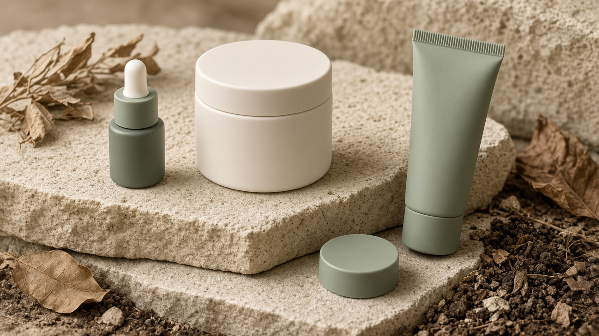
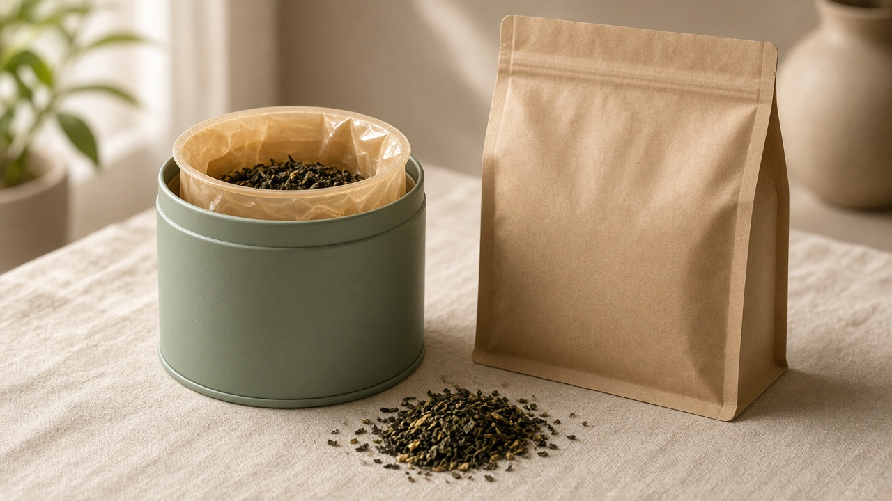

We are building compostable PHA/PLA jars, caps, tubes, tea-tin liners and pouches for Indian D2C brands in beauty, tea and food, made in Gujarat with small pilot runs.
Join the pilotContact us

The images are concept renders, not photos of finished products. Samples will follow our first production trials.
PHA and PLA are bio-based polymers that can break down under the right composting conditions. They do not leave behind persistent plastic.
India's Plastic Waste Management Rules put Extended Producer Responsibility on brand owners. Certified compostable packaging is treated as its own category. We will help you document it.
Packaging that matches your ingredients story, with natural colours, printing, foiling or labels.
Any compostability claim will depend on CPCB certification and the composting conditions that apply. We will not make claims before certification.
Pilot quantities sized for D2C launches, far below typical overseas MOQs.
We work with you on shape, colour and finish to fit your brand.
Local production means shorter lead times and easy factory visits.
Leaflane is at the pre-production stage. We do not have finished samples, CPCB certification or clients yet. We are looking for a small group of early-partner brands to help shape our first production run. If that sounds like you, we would like to talk.
Ahmedabad, Gujarat
WhatsApp +91 97697 00512 Call +91 84240 99044 Email: nemitrading24@gmail.com